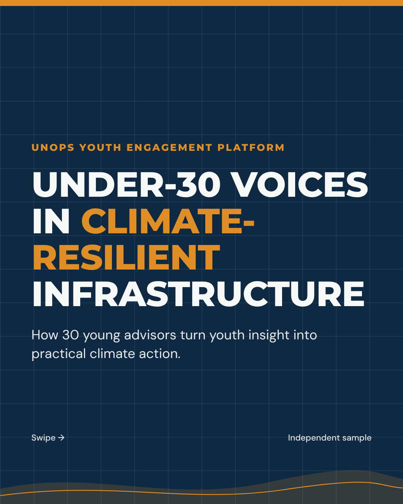
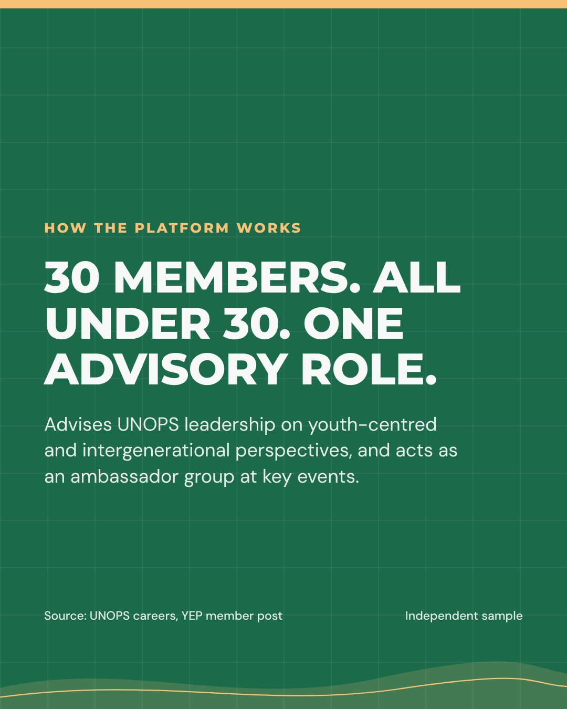
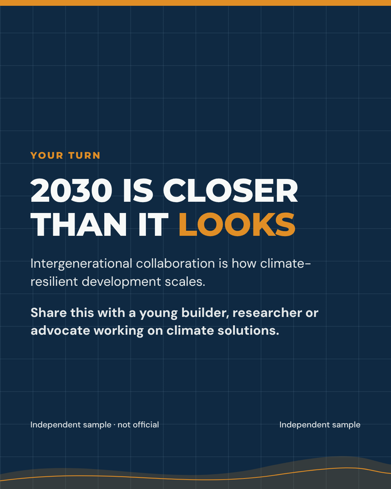
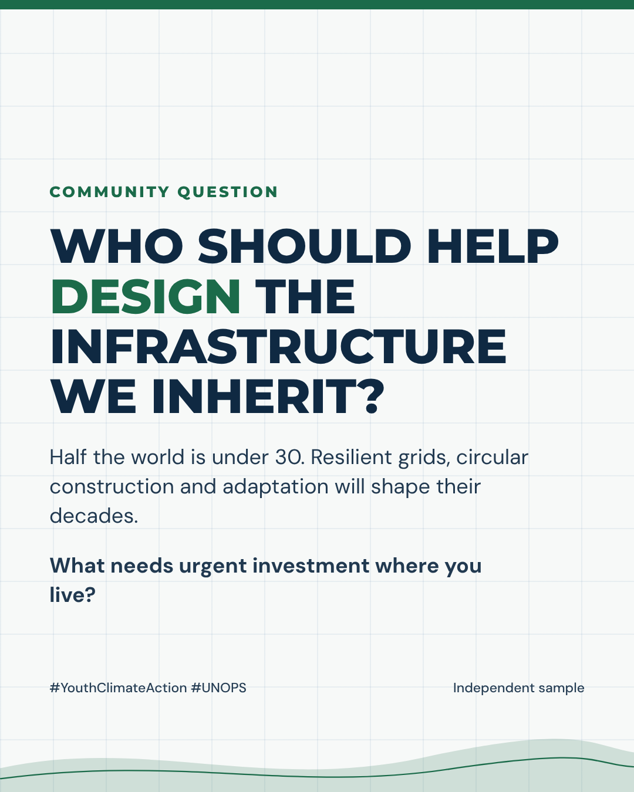

A strategy and five ready-to-post samples, one format and one job per platform, built from UNOPS’s Youth Engagement Platform.
GoalShow I can plan, design and write platform-ready posts that earn a reply.
AudienceYoung professionals, students and practitioners on LinkedIn, Facebook, X, Threads, Instagram and TikTok.
Skills shownSocial strategy, copywriting, graphic design, short video.
Strategy
Four rules, one job per platform
Youth voice first
Lead with what young people do and decide. The organisation comes second.
Published facts only
Every number is checked against a UNOPS or UN page and named on the card.
One idea per card
High-contrast type, alt text on every image, short sentences that translate well.
End on one question
Every caption closes with one question. Replies show whether the message landed.
Platform
Format
Goal
Success signal
LinkedIn
5-card carousel (PDF)
Explain why youth advice matters for delivery
Saves and replies from practitioners
Facebook
One image and a question
Start a conversation in community groups
Local answers; shares into groups
X and Threads
Stat card and a short post
A fast, shareable takeaway
Reposts and replies to the question
Instagram
4:5 image and caption
A saveable message with one call to act
Saves and shares
Reels and TikTok
35-second 9:16 video
Reach new viewers with a hook in 2 seconds
Watch-through and comments
Post samples
One story, five ways
80%
TC
Timothy CastillonCommunications · independent sample, not speaking for UNOPS or the UN Youth Office1h · 🌐
+ Follow
🌍 Half the world is under 30. So who should help design the infrastructure it will inherit?🌍 Half the world is under 30. So who should help design the infrastructure it will inherit?
UNOPS gives part of an answer. Its Youth Engagement Platform, under the motto “30 below 30, to get to 2030,” seats 30 young leaders, all under 30, as advisors on climate action, resilience and sustainable development.
🤝 Why it matters: young people bring lived realities from every region, and they will live with the results.
🌐 From forums to delivery: the first cohort took part in COP30 in Brazil and the Fourth Financing for Development Forum in Sevilla. A second cohort now builds on that.
🏗️ What next: turning youth insight into practical action on resilient grids, circular approaches and adaptation.
👉 Swipe the 5 cards, then tell me: what climate-resilient solution in your community needs urgent investment?#YouthClimateAction #UNOPS #2030Agenda #SDGs
Independent sample for a portfolio; not official UN Youth Office or UNOPS material.
1 / 5



👍❤️💡 38978 comments · 41 reposts
TC
Timothy CastillonJust now · 🌐
Half the world is under 30, and the infrastructure planned today will serve them for decades. 🌍
But young people are rarely in the room when grids, buildings and adaptation plans take shape. UNOPS is working on that: its Youth Engagement Platform seats 30 advisors, all under 30, and a second cohort has now been announced.
Therefore the question comes home: what climate-resilient solution needs urgent investment where you live? #YouthClimateAction #UNOPS
Independent sample, not official UNOPS or UN Youth Office material.

👍❤️ 21256 comments · 88 shares
TC
Timothy Castillon@tcastillon · now
Half the world is under 30. UNOPS puts 30 of them in an advisory seat on climate action and resilience.
🌍 First cohort: COP30 and the Sevilla financing forum
🤝 Second cohort: building on it
What should they be asked first?
Source: UNOPS
TC
tcastillonIndependent sample
1,204 likes
tcastillon Half the world is under 30, and what we build today defines their next decade. 🏗️🌱
UNOPS’s second “30 below 30, to get to 2030” cohort brings young advisors into climate action and resilience work, building on the first cohort’s presence at COP30 and in Sevilla.
Save this for the young builder in your life.
What climate-resilient solution in your community needs urgent investment right now?
#YouthClimateAction #UNOPS #SDGs #Resilience
Independent sample for a portfolio; not official UN Youth Office or UNOPS material.
TCtcastillonIndependent sample
Scene 1 / 4
Role fit
What the posting asks for, and what I adjusted
Checked against the Communications Officer (Graphic Design & Social Media) posting, the campaign brief and published pages. Filter to see what fits, what changed and what was added.
Fit
Visual identity system
One palette, one headline face and one grid across posts, carousel and video.
Fit
Platform-appropriate content
Five formats. Threads reuses the X post; TikTok reuses the reel.
Fit
Youth-focused storytelling
The story centres under-30 advisors and what they influence.
Fit
Measurable engagement
Each caption ends in one question, so replies, saves and shares can be tracked.
Adjusted
Brief claims checked
UNOPS pages confirm the second cohort, COP30 and Sevilla. A platform member also speaks on COP31 youth panels (13–15 Nov 2026), so COP31 can be added with that source. The brief’s May 2026 launch date is not confirmed, so it is not used.
Adjusted
“Over half” became “half”
UNOPS says half the world’s population is under 30, so the copy follows that wording everywhere.
Adjusted
Two organisations, labelled
The platform belongs to UNOPS; the role sits in the UN Youth Office. Every card says “independent sample” and uses no UN or UNOPS logo.
Adjusted
No nature-based claims
No source here supports specific projects, so copy stays at resilient grids, circularity and adaptation.
Added
Alt text and plain language
Every image has alt text. Short sentences translate cleanly into the UN’s six languages.
Added
Caption checklist
Hook, one source, one question, alt text. A four-point check keeps contributor and intern posts steady.
Added
Real people for live posts
These samples are graphics only. Live posts should add photos and quotes from the advisors, with their consent.
Branding
One look across every post
A grid of architectural lines, a curve of water or terrain, and one message per card. No UN or UNOPS logo; every sample says “independent sample”.
Palette (click to copy)
Montserrat ExtraBold
for headlines. DM Sans for captions, labels and sources. Uppercase hooks, plain verbs, the fact first, one question at the end.
Card templates
CoverTopic and promiseFactOne big figureThemesThree tagsActionShare and ask
Do
Keep the amber top bar, a source line on every card and the “independent sample” label. One message per card, with alt text.
Don’t
Don’t use the UN emblem or UNOPS logo, unsourced numbers, or imagery that relies on one culture or region.
If this became official
Switch to the UN Youth Office identity and templates, add partner approvals and route posts through the Office’s workflow.